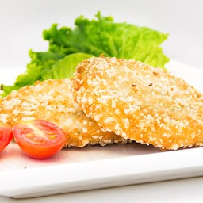
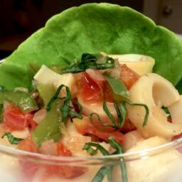
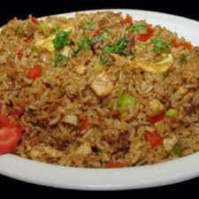
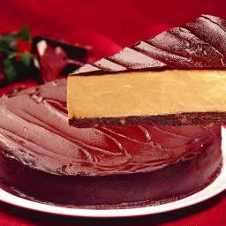

Restaurante
-- Platos de Entrada: --
Pollo al ajillo

El pollo al ajillo,
un clásico de la cocina española,
se distingue por su marcado sabor a ajo,
un toque rústico y la peculiar técnica de
incorporar ajos enteros.
Precio:
-$6500
Croquetas de cangrejo

estas deliciosas croquetas se preparan con cangrejo
(regular, jaiba, o surimi), queso crema,
ralladura de pan, zanahoria, huevo,,
cilantro, y más.,
Precio:
-$7000
Ceviche de palmito

Este refrescante ceviche vegano o vegetariano
se prepara con palmito, cebolla morada, tomate,
jugo de limón, jugo de naranja,
cilantro y sal.
Precio:
-$5800
-- Platos Principales: --
Arroz Chaufa

esta variación del arroz frito se prepara con pollo
, jamón, arroz, cebolla, ajo, jengibre (kion),
huevos, sillao (salsa de soya), aceite,
y más.
Precio:
-$6800
-- Postres: --
Tarta de chocolate

La tarta de chocolate o Tarta Vianer.
Una delicia que lleva dos planchas de bizcocho de chocolate,
separadas por una fina capa de mermelada de damasco
y recubiertas con un glaseado de chocolate.
Precio:
-$7500